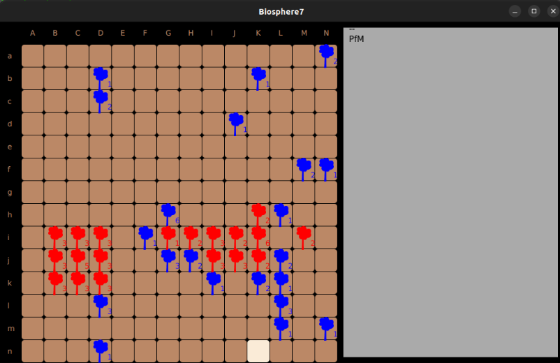

Le projet Biosphere7 etait notre second projet du module d'algo-prog S1, après Odomo.
L'objectif de ce projet est de gagner de l'expérience en programmation, mais aussi en algorithmique.
Cette Sae est decoupe en 2 phase. La premier phase était de code les regles de jeux 1 par 1.
La deuxieme phase était de crée une ia en groupe de deux. La particularite de cette phase c'est que il y avais
un systeme de tournoi ou les ia crée par les groupes jouer le soir entre eux et ganger de points. On pouvait voir
les resultat le matin.
Biosphere 7 est un jeu où l’on doit planter des arbres qui rapporte des points,
il y a des fonctionnalités intéressantes comme le fait de mettre un arbre à côté pour multiplier les points de vie.
Dans la partie 1 nous avons dû liste les actions possible comme coupe un arbre et faire les règles
et dans la 2ème partie nous avons dû créer une IA pour faire des combats entre les autres groupes
